An 8x8 grid of 64 N20 Gear motor cells that physically renders patterns, images, and height maps controlled from a browser through a Raspberry Pi for ~$120
Drag the 3D model on the left to view the shape display CAD from different angles.
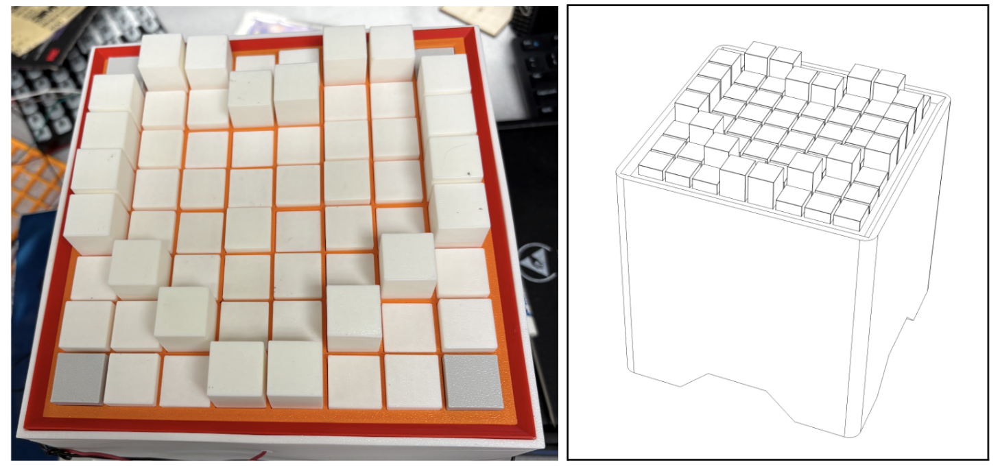
Figure 1: Physical display and CAD render both showing a heart.
Our goal was to build a programmable 8x8 mechanical shape display that can physically represent simple patterns, images, and height maps. Inspired by projects from the MIT Media Lab and Stanford SHAPE Lab. Our biggest challenge was doing it on a rather tight budget. Each cell is a small DC motor driving a lead screw that raises or lowers a printed block. Basically all mechanical parts except the motors were 3D-printed, including the lead screws, which were kept in place by a set screw.
For this project, I did the entire mechanical design, the initial hardware schematic, and integration hell. My other group members helped with soldering and software.
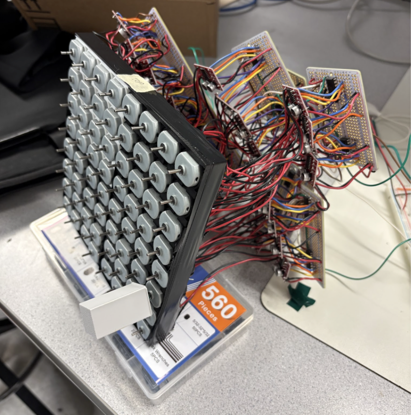
Figure 2: Display with wiring finished, not yet fully assembled (with older DC motors that were eventually replaced with N20 motors)
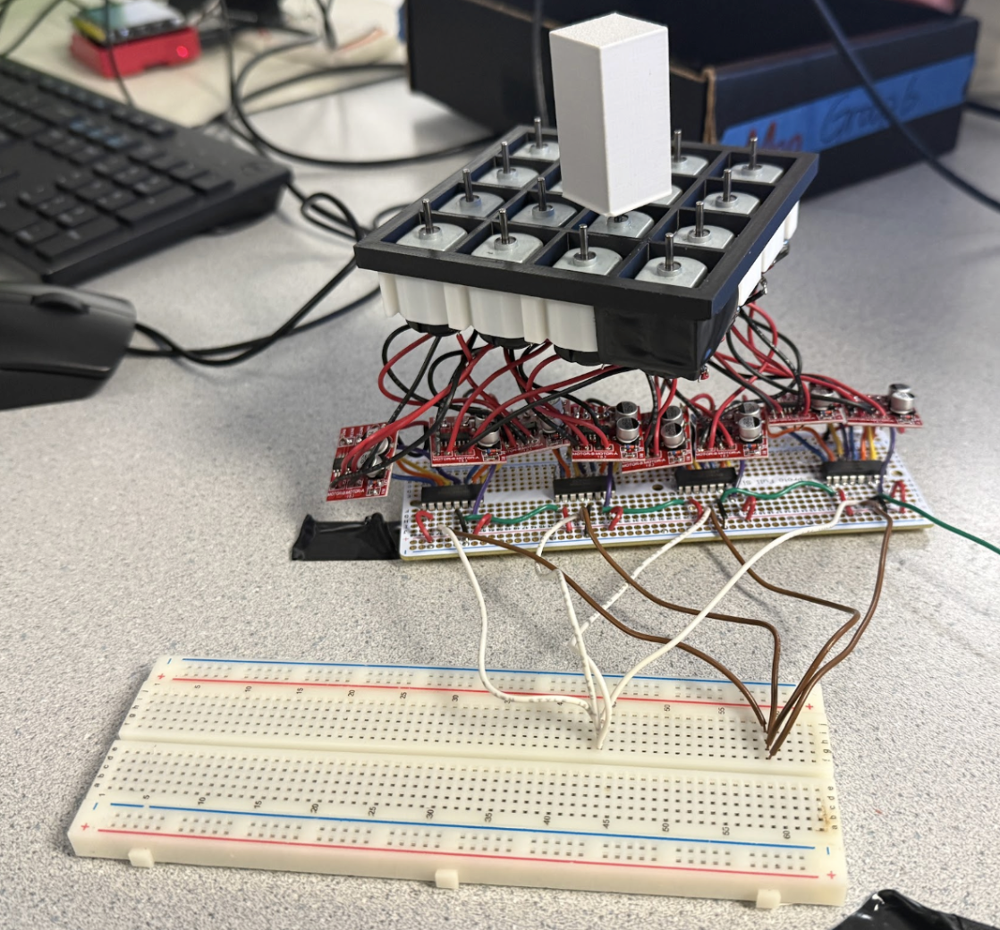
Figure 3: 4x4 module test of the shape display.
The display is made of 64 independently controlled motorized cells. The user generates an 8x8 array in the browser, it's sent to the Pi, and the Pi converts it into motor commands routed through shift registers to the driver boards, which controlled each motor's direction and run time.
Mechanically it was all designed in Fusion CAD. I designed it to be built around a modular 4x4 structure, 16 DC motors per module, each with a lead screw lifting one printed block. Building and testing one 4x4 section first made the full 8x8 far easier to debug.
Early prototypes stalled on friction and tight tolerances, so I adjusted the CAD, reprinted parts at a fine 0.08 mm layer height, sanded moving pieces, and tuned clearances until blocks moved reliably.
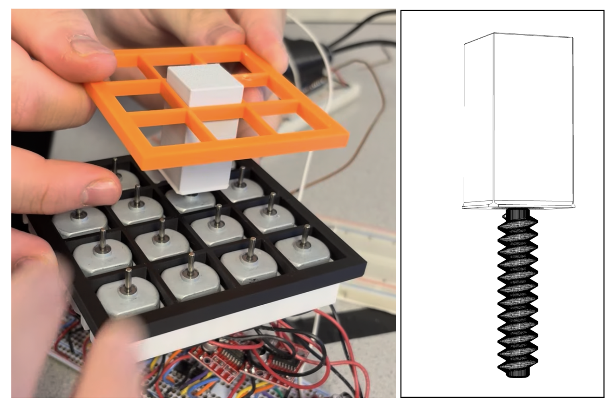
Figure 4: 4x4 module test, using a 3x3 grid to check friction and alignment.
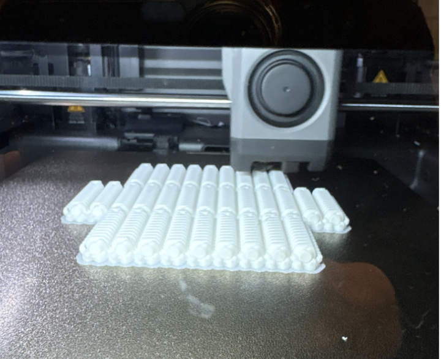
Figure 5: 3D-printing lead screws at 0.08 mm layer height.
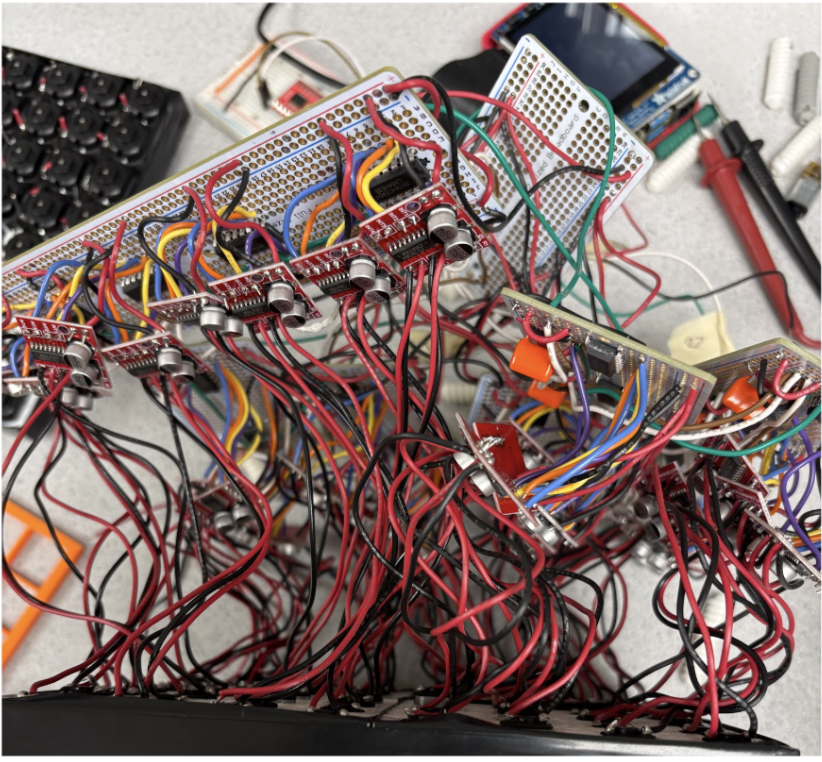
Figure 6: Final wiring.
Electrical componets were 64 DC motors, 32 motor driver boards, and 16 daisy-chained 74HC595 shift registers. Each motor needs two control signals, so the full grid needs 128 control signals. Rather than have 128 GPIO pins (which is far out of the realm of a Rasberry Pi), we used 16 shift registers fed over SPI from the Pi.
The 8x8 is split into four physical 4x4 modules (top-left, top-right, bottom-left, bottom-right), each using four shift registers for its 16 motors. This keeps wiring tidy and mirrors how the software divides the grid.
Power was also a big issue, running many motors at once drew too much current and destabilized the system, so our software capped motion to four motors at a time. We used a 200 W PC power supply to get a stable current source.
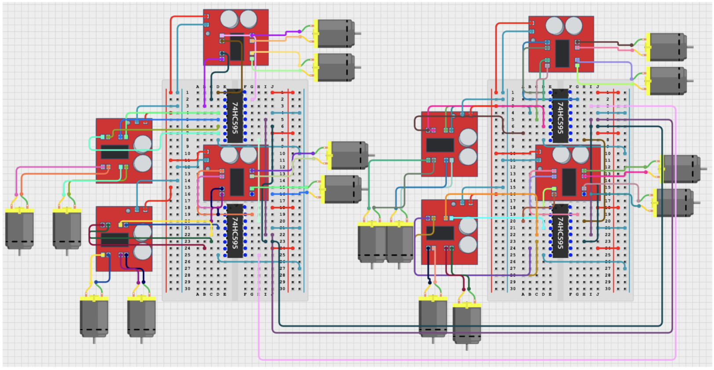
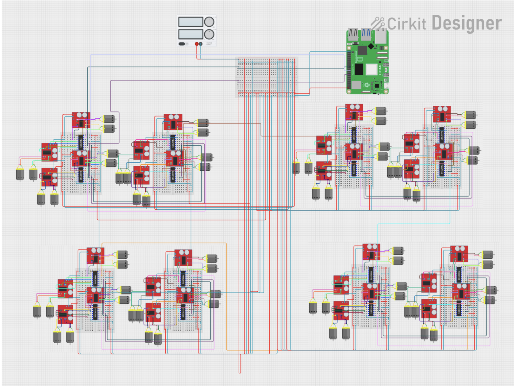
Figures 7 & 8: Schematic of a single 4x4 motor module (left) and the full 8x8 motor circuit (right).
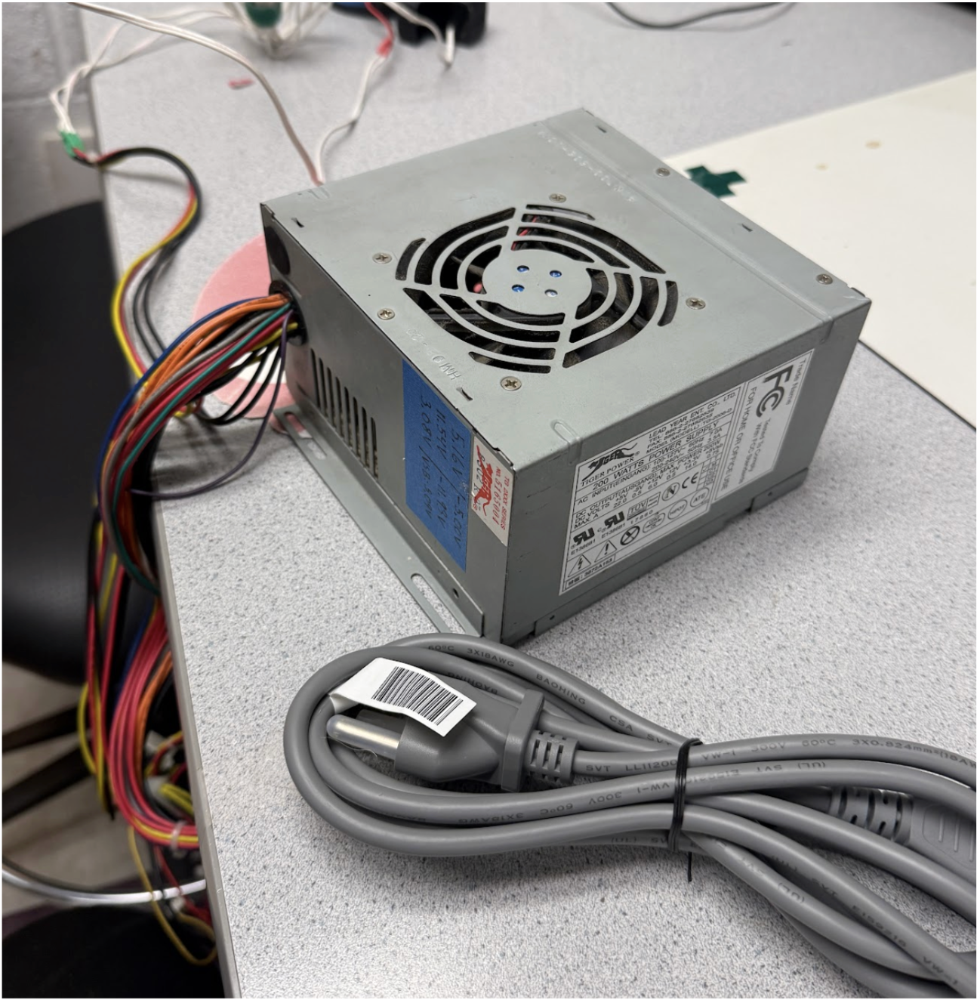
Figure 9: 200 W PC power supply used to stabilize the system.
Friction. Tight printed tolerances stalled some blocks. We loosened the CAD fit, reprinted tight parts, sanded contact surfaces, and bench-tested each motor-block pair before installing them, this also isolated mechanical faults from electrical or software ones.
Weak motors. The original DC motors we chose ended up being too weak to reliably lift the blocks, so we switched to stronger N20 motors, which solved the problem at the cost of more current draw and noise.
Current draw. Moving many motors at once caused voltage drops and noisy control signals. Batching to four motors at a time plus a 200 W desktop PC power supply dramatically improved stability.
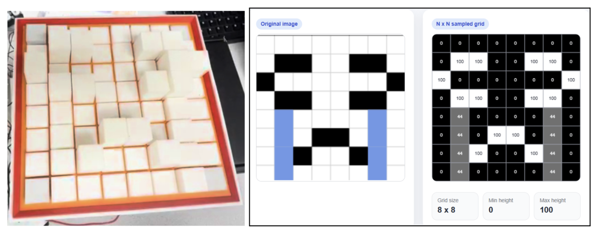
Figure 10: Shape display alongside the inputs — height map generated from the original image.
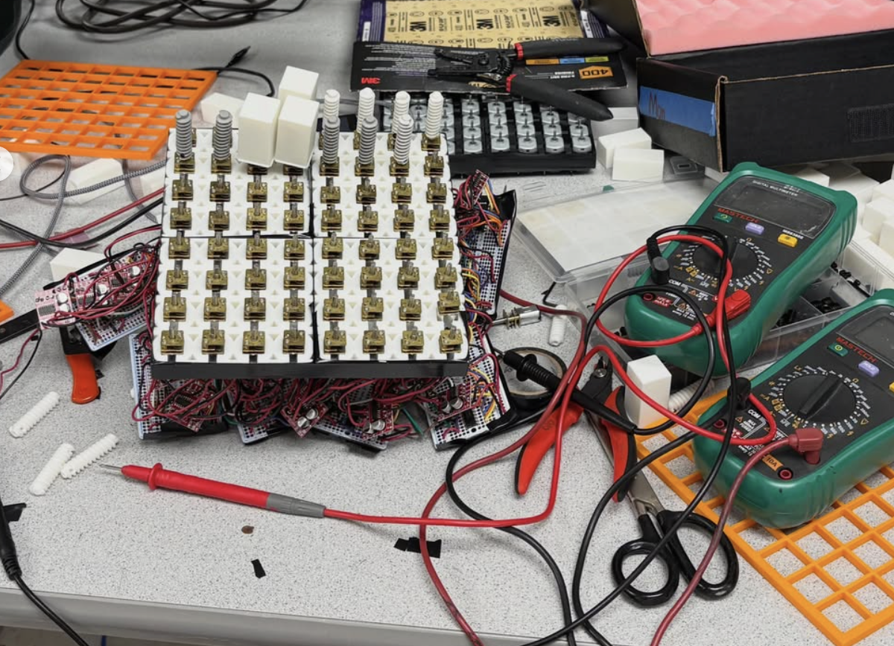
Figure 11: Shape display with new N20 motors.
If we had more budget, as well as more time, improvements would probably center on closing the loop. Eg. adding limit switches, encoders, or sensors and a real homing system that could correct height error and improve startup calibration. We would also probbaly make per-module connector PCBs would replace hand wiring to make the display cleaner and easier to scale beyond 8x8.